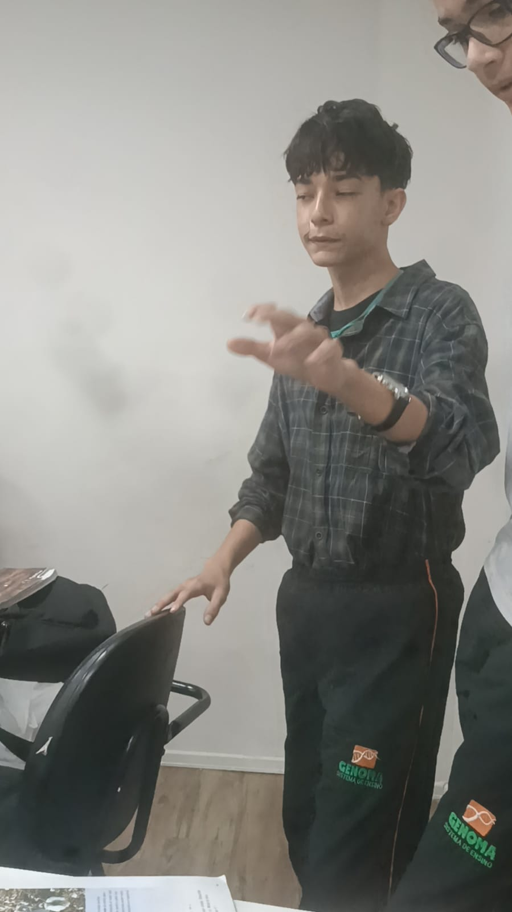
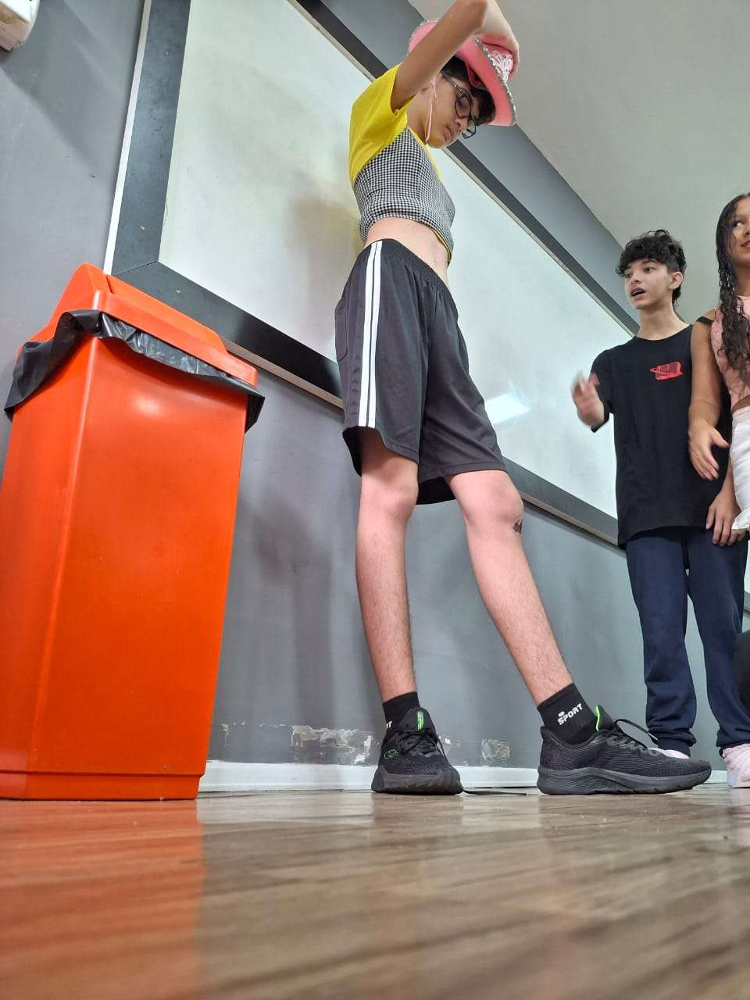
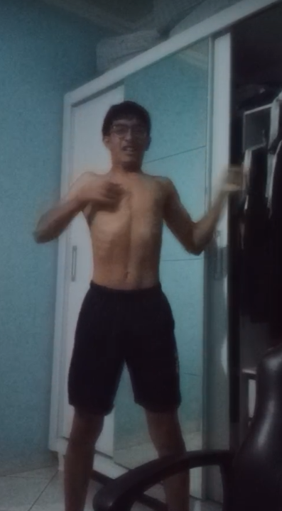
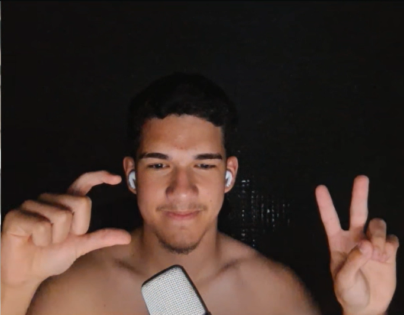
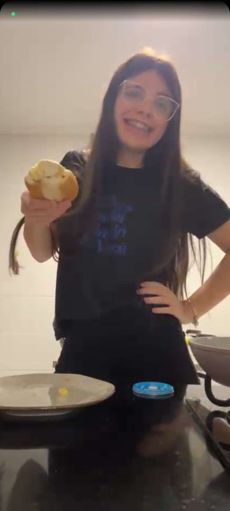
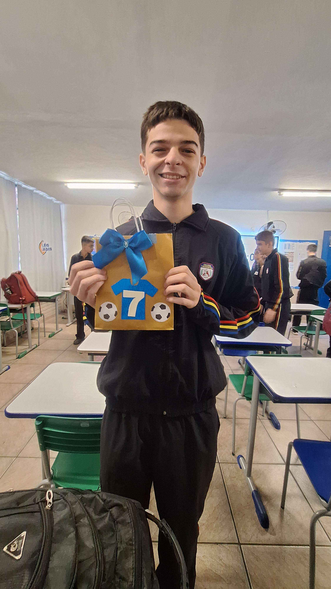
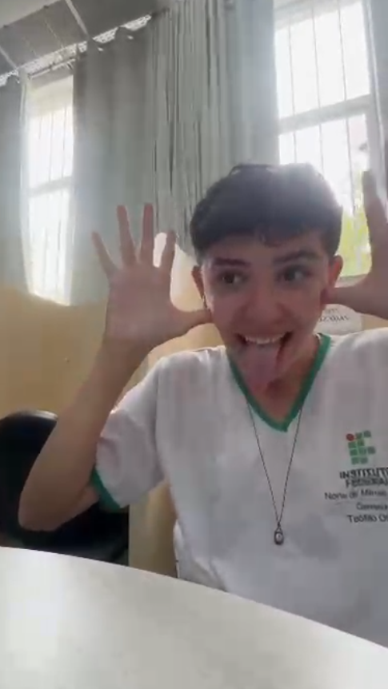
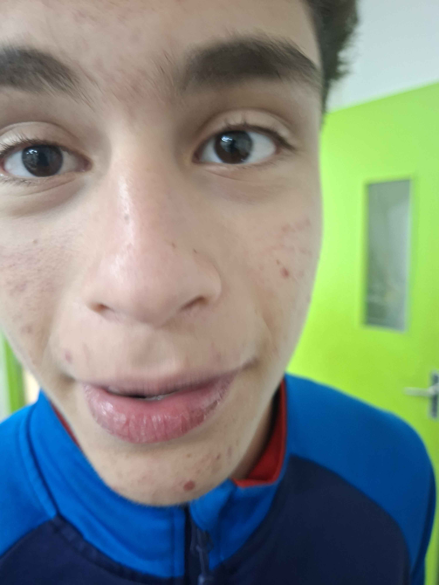

O servidor Cabaré da Tia Marlene foi criado em julho de 2024 por Zellif. A proposta inicial era simples:
reunir amigos em um
espaço organizado para conversar, jogar e manter tudo centralizado em um só
lugar. O
que começou como um servidor pequeno
e básico rapidamente começou a ganhar vida.
Com o passar das semanas, novas pessoas foram chegando, convidadas pelos próprios membros. O ambiente foi
se
tornando mais dinâmico,
com conversas constantes, troca de ideias e canais que surgiam conforme a
necessidade. Assim, o servidor deixou de ser apenas um local para
falar e passou a ser um ponto de
encontro diário para muita gente.
O Cabaré da Tia Marlene também se destacou pela sua identidade única. O nome chamou atenção e acabou se
tornando uma marca
registrada dentro da comunidade: simples, diferente e facilmente reconhecido. Aos
poucos, as interações foram moldando o jeito do
servidor funcionar, criando um estilo próprio e
bem-humorado.
Com o tempo, o servidor foi se organizando melhor, ganhando regras, cargos e eventos ocasionais, sempre
com a
intenção de manter a
convivência agradável. A participação ativa dos membros ajudou a fortalecer
ainda
mais o espaço, deixando tudo mais fluido e acolhedor.
Hoje, o Cabaré da Tia Marlene é visto como um servidor estável, movimentado e com uma comunidade que
cresceu
de forma natural.
Desde sua criação em 2024 até agora, ele continua evoluindo, mantendo a essência
de
ser um lugar simples, tranquilo e aberto para
qualquer pessoa que queira participar.
Conheça os participantes
Zellif
O Criador
Zellif é o criador do Cabaré da Tia Marlene e a mente por trás desse servidor que começou pequeno, mas acabou reunindo uma galera que ninguém esperava. Ele é conhecido por ser inteligente, ter umas ideias rápidas e sempre aparecer com alguma solução do nada.
Fisicamente, é o famoso compacto: pequeno, com aquele cabelo liso meio duvidoso que virou marca registrada, gostando ou não, todo mundo reconhece de longe. Às vezes parece meio esquisito, mas no bom sentido, do tipo que solta comentários aleatórios que viram piada interna pra sempre.
Meio japa, cheio de manias próprias e com um jeito único de falar, Zellif acabou se tornando não apenas o fundador, mas também uma figura central do servidor. Sem ele, o Cabaré não teria nascido, e provavelmente não seria metade do caos organizado que é hoje.
Rafinha
O Aparição das Ruas
Rafinha é aquele tipo de membro que aparece pouco, mas quando aparece, todo mundo percebe. Alto pra caramba, com aquele visual que facilmente lembra o Slenderman versão brasileira, ele sempre surge do nada pedalando sua bike como se fosse parte do cenário urbano.
Apesar da fama de vagabundo, Rafinha é gentil e surpreendentemente inteligente, só não demonstra sempre, porque prefere a vida tranquila, de boa, sem pressa pra nada.
Ele é conhecido pela sua marca registrada: a famosa camisa azul da Seleção Brasileira, que parece ter virado uniforme oficial. Juntando isso com o cabelo cacheado/ondulado, o tom claro de pele e os olhos azuis, Rafinha vira uma figura impossível de confundir.
Quando aparece na rua com a bike, já é quase folclore local. Um personagem único, que completa perfeitamente o elenco do Cabaré da Tia Marlene.
Pedrão
A Lenda Viva
Pedrão é inevitável. Negro, carismático e resenhudo, ele chega e já muda o clima da roda antes de alguém terminar a frase. Tem aquele estilo que faz todo mundo gostar dele sem nem perceber — e se não gostar, azar, porque ele não sai da sua vida tão fácil.
Filho de pai caminhoneiro, Pedrão herdou a energia da estrada: é elétrico, cheio de história, cheio de assunto e sempre pronto pra aparecer do nada em qualquer canto da cidade. Dizem que ele assombra os bairros, mas ninguém sabe se é mito ou só efeito da velocidade da bike dele.
Fiel aos amigos e com coração enorme, Pedrão é praticamente patrimônio público: todo mundo conhece, todo mundo respeita e ninguém confirma oficialmente todas as loucuras que ele já fez.
Ah, e claro: ele filma tudo, está sempre pegando a galera de surpresa e expondo as vergonhas alheias, só pra garantir que ninguém esqueça quem é o verdadeiro rei do caos.
Em resumo: Pedrão é resenha, moderador do Tia Marlene, lenda urbana e filme de ação ambulante. Quem conhece, sabe.
Duarte
O Piloto da Motinha
Duarte é gordo, gente boa e grande na medida certa pra causar presença. Moderador do Cabaré e um tanto quanto iludido, mas ninguém tem coragem de tirar sarro demais porque ele é amigão de todos.
Ele adora jogar e vive envolvido em suas aventuras virtuais, mas também não perde a chance de dar um rolê pela cidade com sua motinha elétrica, deixando os bairros em alerta: se ouvir um ronco silencioso vindo de algum lugar, provavelmente é ele passando.
Duarte tem um fiel escudeiro chamado Jack, seu cachorro que acompanha tudo, às vezes mais esperto que ele, às vezes só atrapalhando a bagunça. Branco, cabelo curto e sempre de bom humor, Duarte é aquele tipo de personagem que deixa o servidor mais divertido só por existir.
Em resumo: Duarte é motinha, gamer e cachorro, tudo junto numa mistura de amizade e caos que ninguém esquece.
Lele
A Alienigina
Lele é a namorada do Heitor, moderadora do Cabaré da Tia Marlene e, basicamente, quem segura a barra quando o servidor vira bagunça total. Se alguém apronta, pode apostar: ela sabe de tudo antes de todo mundo.
Mora na lendária Varginha, então não se assuste se ela aparecer com teorias conspiratórias ou contar histórias bizarras de alienígenas. É irmã do Soso Lanches, ou seja, já nasceu sabendo lidar com caos, fome e confusão ao mesmo tempo.
Lele fuma, adora balada e tem aquele talento especial de aparecer do nada exatamente quando algo está prestes a explodir de zoeira. Ela é aquela mistura perfeita de “moderadora responsável” com parceira de resenha que nunca deixa a galera dormir tranquila.
Heitor
Heitor é aquele tipo de pessoa que parece ter nascido para duas coisas na vida: ser fofo e entrar em confusões digitais. Admin do Cabaré, ele tenta manter a ordem do servidor com a mesma habilidade que tenta organizar sua vida… ou seja, falhando com estilo.
Ele é conhecido por ser o único do grupo que conseguiu fazer um relacionamento à distância funcionar, o que automaticamente coloca ele no mesmo nível de criaturas lendárias como unicórnios, o ET de Varginha e o servidor funcionando sem treta por 24 horas.
Quando não está pacificando discussões, mutando alguém pela quinta vez no dia ou tentando descobrir quem fez spam no chat de madrugada, Heitor está em um dos seus habitats naturais: A academia fingindo que está treinando ou caçando pokemons.
Heitor é aquele amigo que você chama pra qualquer coisa: pra rir, pra reclamar da vida ou pra culpar quando algo dá errado no servidor. Ele é fofo demais pra ficar bravo, desastrado o suficiente pra ser engraçado e dedicado o bastante pra salvar o Cabaré do caos… pelo menos até a próxima treta começar.
Dallaqua
Larissinha
Saas

O Sensível do Caos
Saas é aquele membro que sempre tenta ajudar todo mundo. Gente boa de verdade, coração mole e sempre disposto a dar uma força. Mas, junto disso, vem o pacote completo: emocionalmente sensível, meio dependente emocional e com uma certa instabilidade emocional que já virou característica oficial dele no servidor.
Ele tem cabelo liso, gosta de estilo, vive cheio de acessórios e não esconde: usa piercing “polêmico”, brinco, e tudo mais que compõe a estética dele. A personalidade também mistura um toque de rebeldia, aquela vibe “bandido” de brincadeira que o pessoal sempre zoa.
Sobre a família… bom, vamos dizer que ele tem um background diferenciado, com histórias que ninguém sabe se são reais ou só lenda urbana contada pelo próprio Saas.
No fim das contas, Saas é único: sensível, estiloso, caótico e sempre presente quando alguém precisa, mesmo que ele mesmo esteja precisando mais.
Mario
Batman

Batman é praticamente um personagem jogado na vida real por engano. Loiro, bonito, inteligente e fofo, ele tem aquele nariz poderoso que poderia tranquilamente ser usado como arma de destruição em massa ou como antena 5G, dependendo da necessidade.
Primo do lendário Dallaqua, Batman herdou a genética privilegiada da família: talento, carisma e uma certa tendência a tomar decisões questionáveis. Inclusive, dizem que a linhagem é tão diferenciada que até o pai dele, Pedro Viana, virou ícone — um homem tão autêntico que nenhum rótulo o segura.
Além disso tudo, Batman é um álcool de alta octanagem quando o assunto é festa. Ele já nasce calibrado. Se você vê ele bebendo, não se preocupe: provavelmente ele já estava igual antes de chegar.
Atleta multifuncional, divide seus dias entre jogar basquete, onde parece saído direto de um filme teen americano, e jogar Valorant, onde parece que esqueceu completamente que tem coordenação motora, porque o aim… ah, o aim… deixa pra lá.
Mas apesar do caos, Batman é gente boa de verdade. Daqueles que você chama pra rir, pra desabafar, pra jogar ou pra se arrepender no dia seguinte. Ele é o equilíbrio perfeito entre “boa aparência”, “boa pessoa” e “boas histórias pra contar no outro dia”.
No fim, Batman é isso:
um loiro de nariz avantajado, coração gigante, mira duvidosa e fofura natural.
Rike
Bufas
Guedes
Daenrich
Dahenrich é o tipo de cara que parece ter sido montado no modo “aleatório do The Sims”. Ele joga CS como se estivesse numa operação da SWAT, mas no Valorant vira um bot premium: atira no chão, mira na parede e ainda culpa o ping.
az primeiro Agro no IF, o que significa que ele sabe exatamente diferenciar uma vaca de um poste — e isso já é mais do que a maioria teria coragem de afirmar. Ele vive aparecendo com histórias do campo, como se tivesse um currículo secreto de fazendeiro milionário, quando na verdade só tirou foto perto de um trator uma vez.
Teve também a fase do cabelo raspado, aquele momento em que ele decidiu mudar de vida… e só mudou o penteado mesmo. O resto continuou igual: a gameplay duvidosa, as decisões impulsivas e o emocional à flor da pele.
E claro:
não pode ver uma mulher.
Se uma garota der “boa noite”, ele entende como pedido de casamento. Ativa o modo sedutor, arruma a postura, ajeita a camiseta e solta um “eae princesa” que faria Deus reconsiderar criar o ser humano.
Esportivo, cheio de energia, sempre rindo alto e nunca pensando muito antes de agir, Dahenrich é aquele amigo que faz besteira, mas entretém a turma inteira enquanto faz.
Top Momentos do Cabaré